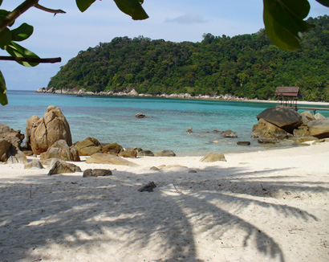
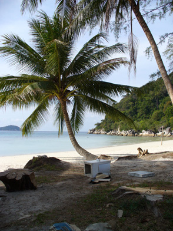
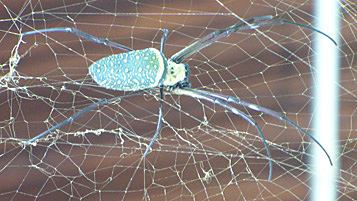
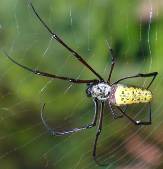
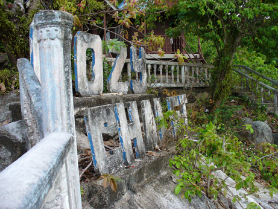
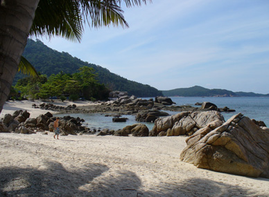

March 3, 2006
Hi Folks,
 Left Lumut on an overnight "ekspres bas" heading through Ipoh, followed by the capital, Kuala Lumpur, and accross to Kuala Terengganu. Upon arrival, my only goal was to walk the five or six blocks to the main bus station, where I caught another bus for the 80 kilometer trip up the east coast to Kuala Besut, the jumping off place for the Perhentian islands.
On my first trip to S.E.Asia back in 1993, I was fortunate enough to hear about world class snorkling all around the Perhentian islands, Besar (large) and Kucil (small). At that time, the tourist trade was in it's infancy, with only four sleeping establishments on Besar, and nothing but a small fishing village on Kucil. With no posted schedule of boats to the island, one had to make tentative arrangements at the dock. By coincedence, a group of four businessmen from Kuala Lumpur were also heading to the island for fishing and recreation, which made transportation arrangements easier. They stayed in a new chalet just being constructed on Besar, a jaunt down the beach from where I had been advised to stay: the Coral View -- consisting of four or five grass shacks. I distinctly remember never closing the door throughout my stay. Had to draw my own water from the well to bathe and wash up. The price (probably less than $10) included breakfast and dinner. There was no place to buy anything on the entire island.
 But the snorkling was fantastic in 1993. I entered the water about 10 in the morning, swam and snorkled, seldom leaving the water for 5 or six hours. Fish and coral of every description in the book kept me entertained in crystal clear water. This was heaven. Can you understand why I have wanted to return for such a long time? Only once since then have I seen a place with equal appeal -- the Togians in Sulawesi's Tomini bay. Christmas In Sulawesi, 1999. With the religous unrest presently in Indonesia in general, and Sulawesi in particular, along with the difficult visa arrangements now imposed by Indonesia, the Perhentians became my target for coral viewing this trip.
Now when a westener arrives in Kuala Besut, he is met by boys and girls, men and women, all trying to sell boat transportation to the islands, or better yet, multi-day packages including lodging, transportation, and just about anything else you can immagine as part of a passion island dreamy experience. After all, the translation for the words "Pulau Perhentian" is "Passion Island." Walking around the village, I spot the bus station, and look for a place to have breakfast. Found a crowded place serving roti, so my stomach finally gets long overdue nourishment.
Then around the corner at 11 AM to one of the many offices arranging transportation to the islands. They happily sell me a round trip slow boat ticket, with 8, 12, and 4 o'clock departure times daily. Then they try to pressure me into taking a fast boat, for an additional $3. These fast boats have a tendancy to really jar you around, so I choose to wait. But with less than 30 minutes to wait, they tell me the slow boat won't run until 2 or 3 PM. Finally they discount the ride out to only $1.50 more for the fast boat, which is ready to leave now. Giving in, I'm standing on Pulau Perhentian Besar thirty minutes later, after a small boat comes out to retrieve passengers from the mid-sized fast boat. The small boat is beached on the island -- something that was prohibitted 13 years ago.
 Fortunately, my first choice for lodging has a single available, so that problem is quickly solved, and I don't have to figgure how to get to the other 20 or so establishments on the island. After all, it is the very first day of the "high" season, and less than two weeks ago the mainland near hear had major floods. Walking to the cabin after dark could be scarry, because there are many large spiders in webs all over the place. After a quick change of clothes, I can not resist the urge to walk down to the Coral View Chalets at the end of the beach where I recognize a peninsula from long ago. The owner is in, so we talk about the good ol' days in '93. Same owner, same place, he even shows me where the well is located. His brother, who managed it in the early days, passed away several years back. At that time it consisted of five grass shacks. Information in the travel guide says the Coral View now gets $70 a night for the cheapest room -- and the guide is 2 years old. It feels good to be back.
It's now dead-low tide, so one must carefully choose where to enter the water without disturbing the coral. A group of five or six workers are digging up chunks of coral in the shallow water, and throwing them into a pile. Asking what they are doing seems natural. "Clearing a path so guests can enter the water at low tide" is the response. Disturbing the coral was prohibbited 13 years ago. The next two hours are spent looking for live coral, and almost none is found. Most of it is broken and scattered around. The highlight was seeing a black-tipped reef shark, and many colorful fish. Water clarity was moderate.
Asking many of the old timers on the island where the best place is to see live coral comes up with two locations: Primarily the rocks near Coral View, and secondly, the area known as shark bay on the other side of the island. The former is the general area I was in today, but they tell me further out towards the point. Sharks are also known to frequent the area in the aftenoon. They also tell me the reason so much of the coral is dead is because now the monsoon winds seem to hit at low tide, while before the coral was protected by higher water. It's getting late, so the next trip will have to be tomorrow, my last day.
While lying in bed, the sound of a light rain shower gets me to wondering what the water will be like tomorrow. But in the morning, the rain gets heavier, then subdides by mid-morning. It remains overcast and windier than yesterday, but into the water I must go. Water clarity just slightly worse than yesterday, but much windier. Use a disposable camera to take a few pictures but not sure they will come out without direct sunlight. See two more sharks, and cover a lot of territory. Actually found some areas of staghorn coral that was not broken, but it seemed rather colorless. I feel like crying.
Back on land I take a walk down to the other end of the beach, and find a path that climbs into the jungle to get around a large outcropping of rocks. Don't see any monkeys like last time, but several colorful mushrooms are seen. The path follows along a rather modern aboveground 12" PVC pileline. After 15 minutes the trail ends at an old delapidated complex labeled CO29 Chalet. Heard that this went out of business when the government renigged on it's promise to supply all establishments on Perhentian Besar with fresh drinking water. The pipeline now is only used to supply fresh water taken from wells on Besar and piped underwater to Perhentian Kucil.
Rained again overnight. How appropriate. Up at 7 to catch my 8 AM slow boat reservation. At 8 I'm told the slow boat was going somewhere else for the day and won't be comming to the island. I ask to talk to the slow boat company (who is still trying to sell me a fast boat upgrade) and tell them sorry I have no money for upgrade, no money for another day lodging, and they must take me back to the mainland. They agree to pick me up at noon -- no charge for fast boat. I explain that will make me miss my connections for transportation to Thailand, and force me to stay overnight in Kota Baru, Malaysia. They don't even appologize. (Incidentally, KB is a great place to spend an 'extra night' because it has one of the best night markets in Malaysia.)
Bill